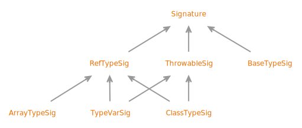

- All Known Subinterfaces:
Signature.ArrayTypeSigPREVIEW,Signature.BaseTypeSigPREVIEW,Signature.ClassTypeSigPREVIEW,Signature.RefTypeSigPREVIEW,Signature.ThrowableSigPREVIEW,Signature.TypeVarSigPREVIEW
public sealed interface Signature
permits Signature.RefTypeSigPREVIEW, Signature.ThrowableSigPREVIEW, Signature.BaseTypeSigPREVIEW
Signature is a preview API of the Java platform.
Preview features may be removed in a future release, or upgraded to permanent features of the Java platform.
Models generic Java type signatures, as defined in 4.7.9.1.
- Sealed Class Hierarchy Graph:
- 
- Since:
- 22
{kind=link}
-
Nested Class Summary
Nested ClassesModifier and TypeInterfaceDescriptionstatic interfacePreview.Models the signature of an array type.static interfacePreview.Models the signature of a primitive type or voidstatic interfacePreview.Models the signature of a possibly-parameterized class or interface type.static interfacePreview.Models the signature of a reference type, which may be a class, interface, type variable, or array type.static interfacePreview.Models a signature for a throwable type.static interfacePreview.Models the type argument.static interfacePreview.Models a signature for a type parameter of a generic class or method.static interfacePreview.Models the signature of a type variable. -
Method Summary
-
Method Details
-
signatureString
-
parseFrom
-
of
-
Signaturewhen preview features are enabled.